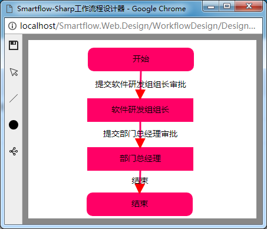

Smartflow-Sharp
工作流现状分析
目前，属于.NET平台下研发的工作流管理平台真是太少，可供选择真心不多，官方我们之前也采用过，没有用好，到处是问题，而且还没有提供在线的流程设计器，使用起来极其不方便。市面上免费开源工作流管理平台又很少，基本都是属于要收取一定的费用。真正免费的又不是很好用，收费的又太高，所以笔者自已闭门造车，打造一款基于.NET平台免费开源工作流管理平台，为开源尽一点自已的绵薄之力。
Smartflow-Sharp 介绍
笔者基于.NET平台，研发了Smartflow-Sharp工作流管理平台，Smartflow-Sharp工作流管理平台目前包含工作流引擎、工作流流程设计器，支持流程在线设计。工作流引擎负责提供对流程的解析，并驱动流程的流转，是工作流平台核心部件。流程设计器是基于SVG研发，支持所有主流浏览器，IE浏览器只支持IE9以上的版本。工作流平台研发所采用的技术框架和工具是Vs2013+ Dapper+ASP.NET MVC4.0+.NETFX4.0。为了便于后续扩展，支持其他的数据库的访问，笔者经过慎重考虑采用Dapper 组件， 了解该组件的，应该知道他是一款，半ORM框架，对原生SQL语句支持比较友好，且支持所有主流数据库系统访问。 所以，你不用担心Smartflow-Sharp工作流管理平台对跨库访问能力。目前，默认只支持 MSSQLSERVER数据库，若想支持其他数 据库访问，请修改工作流引擎中DapperFactory 工厂类，提供数据库访问接口。工作流平台目前实现功能点如下：
- 支持流程流转；
- 支持流程分支；
- 支持流程撤销；
- 支持流程原路回退；
- 支持流程节点角色绑定；
- 支持流程在线设计；
-
提供友好授权验证接口；
…
先睹为快，工作流设计器如下图：

Smartflow-Sharp 示例
打开项目文件夹，在SQLServer2005中按顺序执行SQL文件夹下SQL的脚本，执行完成后会创建flow、bussiness两个数据库。然后，在VS中打开项目解决方案，分别找到example\Smartflow.Web.Mvc\Web.config，src\Smartflow.Web.Design\Web.config 配置文件，修改其访问数据库连接字符串，然后，将这两个项目发布到本地IIS虚拟目录里。部署完成后，直接浏览项目，如果能浏览到登录界面表示部署成功。运行起来后，先画业务流程图，然后再发起定密申请。
Smartflow-Sharp 集成
Smartflow-Sharp工作流管理平台与业务系统集成，由于Smartflow-Sharp工作流管理平台的高度可定制化特点，既是优点也是缺点，优点就是可以很方便的根据用户的需求做定制化研发，缺点是太过灵活，有些功能需要用户自已开发。集成步骤如下：
1、flow是工作流基础库，直接整体拷贝到你业务系统
2、在flow数据库中打开t_config表，在表中增加业务库的连接字符串
3、bussiness是提供的示例库
4、工作流节点要与角色关联，用户必须提供角色表，工作流是依据角色筛选审批人员
5、调整业务系统和Smartflow.Web.Design项目中Web.config配置文件，如下图
<configsections>
<section name="smartflowConfig"
type="Smartflow.SmartflowConfigHandle,Smartflow" />
</configsections>
<smartflowconfig
connectionstring="server=127.0.0.1;database=flow;uid=sa;pwd=123456"
category="SQLServer" />
<add key="busConnection"
value="server=127.0.0.1;database=bussiness;uid=sa;pwd=123456" />
以上就是Smartflow-Sharp工作流管理平台完整的集成过程，工作流管理平台还有些工作需要由用户自已来完成如用户、角色等信息，都需要用户自已提供维护界面。通常在集成过程中需要提供待办、审批记录这些请参照示例，按需集成的，在此不详细作介绍。
Smartflow-Sharp 未来
笔者会对Smartflow-Sharp工作流管理平台，一直维护到底。未来，我会对工作流管理平台增加更多有趣的功能，以便你能将工作流平台更加快速的融入到业务系统中。期望，能打造成符合中国特色工作流管理平台，造福更多企业和开发人员。
关于作者
入行七年多的时间，一直从事研发工作，主要从事的ERP 管理类型信息系统研发。 七年时间也不短，一直碌碌无为，于是我决定现在要做点什么事情，由于之前接触过工作流研发方面事情，所以我就想做个免费开源工作流管理平台。工作流管理平台的技术含量并不高，但是要想把他做好，也是需要花很大的精力。如果你觉得能帮助到你，欢迎帮忙推荐。生活不易，若有商务合作的欢迎联系，我的联系方式237552006@qq.com。